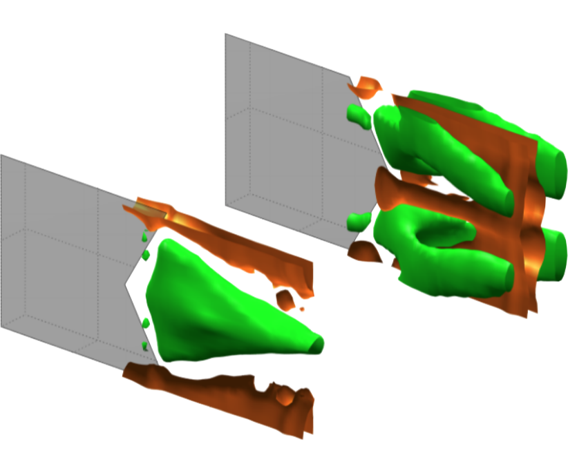

T. Van Buren, D. Floryan, D. Brunner, U. Senturk, and A. J. Smits, Physical Review Fluids (2017), 2(1), 014702
The ends of fish's tails come in many shapes. We use experiments to systematically explore how different shapes affect swimming performance. The image shows a panel with a concave end and another with a convex end, with the green areas indicating increased streamwise momentum and the orange areas indicating decreased streamwise momentum.
The effects of changing the trailing edge shape on the wake and propulsive performance of a pitching rigid panel are examined experimentally. The panel aspect ratio is AR = 1, and the trailing edges are symmetric chevron shapes with convex and concave orientations of varying degree. Concave trailing edges delay the natural vortex bending and compression of the wake, and the mean streamwise velocity field contains a single jet. Conversely, convex trailing edges promote wake compression and produce a quadfurcated wake with four jets. As the trailing edge shape changes from the most concave to the most convex, the thrust and efficiency increase significantly.